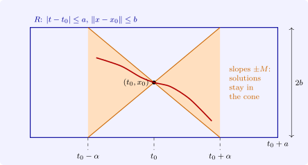
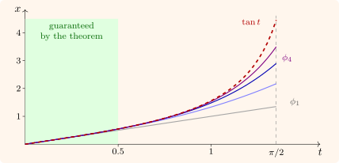

2.3 The Picard–Lindelöf theorem
Fix the rectangle (in \(\mathbb R^{n+1}\), a cylinder) \[ R = \bigl \{(t, x) : |t - t_0| \leq a,\ \|x - x_0\| \leq b\bigr \}, \qquad M = \max _R\|f\|, \qquad \alpha = \min \Bigl (a, \frac bM\Bigr ). \] A solution starting at \(x_0\) moves with speed at most \(M\), so in time \(|t - t_0| \leq b/M\) it cannot leave the ball of radius \(b\); this is why the interval of existence is \(\alpha \) rather than \(a\) (Figure 3).

Theorem 2.3.1 (Picard–Lindelöf). Let \(f\) be continuous on \(R\) and Lipschitz in \(x\) on \(R\) with constant \(L\). Then the initial value problem has exactly one solution \(\phi \) on \(J = [t_0 - \alpha , t_0 + \alpha ]\). It is the uniform limit on \(J\) of the Picard iterates \[ \phi _0(t) = x_0, \qquad \phi _{k+1}(t) = x_0 + \int _{t_0}^tf\bigl (s, \phi _k(s)\bigr )\,ds , \] and the error after \(k\) steps satisfies \[ \|\phi (t) - \phi _k(t)\| \leq \frac ML\,\frac {(L|t - t_0|)^{k+1}}{(k + 1)!}\,e^{L|t - t_0|} . \]
Proof. We take \(t \geq t_0\); the other side is the same.
The iterates are defined and stay in \(R\). By induction: if \(\phi _k\) is continuous on \(J\) with \(\|\phi _k(s) - x_0\| \leq b\), then \(f(s, \phi _k(s))\) is defined and continuous, \(\phi _{k+1}\) is continuous, and \(\|\phi _{k+1}(t) - x_0\| \leq \int _{t_0}^t\|f\|\,ds \leq M(t - t_0) \leq M\alpha \leq b\).
Successive differences. We claim that \[ \|\phi _{k+1}(t) - \phi _k(t)\| \leq \frac {ML^k(t - t_0)^{k+1}}{(k + 1)!} . \] For \(k = 0\), \(\|\phi _1(t) - x_0\| \leq M(t - t_0)\). If it holds for \(k - 1\), then by the Lipschitz condition \begin {align*} \|\phi _{k+1}(t) - \phi _k(t)\| &\leq \int _{t_0}^tL\|\phi _k(s) - \phi _{k-1}(s)\|\,ds\\ &\leq L\int _{t_0}^t\frac {ML^{k-1}(s - t_0)^k}{k!}\,ds = \frac {ML^k(t - t_0)^{k+1}}{(k + 1)!} . \end {align*}
Uniform convergence. The series \(\phi _0 + \sum _k(\phi _{k+1} - \phi _k)\) is dominated on \(J\) by \(\sum _kM L^k\alpha ^{k+1}/(k + 1)! = (M/L)(e^{L\alpha } - 1) < \infty \), so by the Weierstrass \(M\)-test the iterates converge uniformly on \(J\) to a continuous \(\phi \), with \(\|\phi (t) - x_0\| \leq b\). Since \(\|f(s, \phi _k(s)) - f(s, \phi (s))\| \leq L\|\phi _k - \phi \|_\infty \to 0\) uniformly, we may pass to the limit under the integral in the definition of \(\phi _{k+1}\), and \(\phi \) satisfies the integral equation. By Lemma 2.1.1 it is a solution.
Error bound. Using \(\frac {1}{(k + 1 + i)!} \leq \frac {1}{(k + 1)!\,i!}\), \[ \|\phi (t) - \phi _k(t)\| \leq \sum _{j \geq k}\|\phi _{j+1}(t) - \phi _j(t)\| \leq \frac ML\sum _{j \geq k+1}\frac {(L(t - t_0))^j}{j!} \leq \frac ML\frac {(L(t - t_0))^{k+1}}{(k + 1)!}e^{L(t - t_0)} . \]
Uniqueness. If \(\psi \) is another solution on \(J\), its graph stays in \(R\) by the cone argument, and \(u(t) = \|\phi (t) - \psi (t)\|\) satisfies \(u(t) \leq \int _{t_0}^tLu(s)\,ds\). By Gronwall’s inequality (Theorem 2.4.1 below, with \(C = 0\)), \(u \equiv 0\). □
Example 2.3.2. For \(x' = 1 + x^2\), \(x(0) = 0\), whose solution is \(\tan t\), the iterates are \[ \phi _1 = t, \qquad \phi _2 = t + \frac {t^3}{3}, \qquad \phi _3 = t + \frac {t^3}{3} + \frac {2t^5}{15} + \frac {t^7}{63}, \quad \dots \] Each iterate gets one more Taylor coefficient of \(\tan t\) right. On \(R\) with \(a = 1\) and \(|x| \leq b\), \(M = 1 + b^2\) and \(\alpha = \min (1, b/(1 + b^2))\), which is largest, \(\frac 12\), at \(b = 1\). So the theorem guarantees a solution on \([-\frac 12, \frac 12]\), while \(\tan t\) exists on \((-\pi /2, \pi /2)\): the theorem is local and conservative. How far a solution really extends is the subject of the next section. Figure 4 shows the iterates.

The contraction mapping view
The proof is an instance of a general principle.
Theorem 2.3.3 (Banach). Let \((X, d)\) be a complete metric space and \(T\colon X \to X\) a contraction, \(d(Tx, Ty) \leq q\,d(x, y)\) with \(0 \leq q < 1\). Then \(T\) has exactly one fixed point \(x^*\), and for every \(x_0 \in X\) the iterates \(x_{k+1} = Tx_k\) converge to it, with \(d(x_k, x^*) \leq \frac {q^k}{1 - q}d(x_1, x_0)\).
Proof. \(d(x_{k+1}, x_k) \leq q^kd(x_1, x_0)\) by induction, so for \(m > k\), \(d(x_m, x_k) \leq \sum _{j=k}^{m-1}q^jd(x_1, x_0) \leq \frac {q^k}{1 - q}d(x_1, x_0)\): the sequence is Cauchy, and converges to some \(x^*\) by completeness. \(T\) is continuous, so \(Tx^* = \lim Tx_k = \lim x_{k+1} = x^*\). If \(y^*\) is another fixed point, \(d(x^*, y^*) = d(Tx^*, Ty^*) \leq q\,d(x^*, y^*)\), which forces \(d(x^*, y^*) = 0\). Letting \(m \to \infty \) in the Cauchy estimate gives the error bound. □
To apply it, let \(X\) be the set of continuous \(\phi \colon J \to \bar B(x_0, b)\), which is complete under the uniform metric, and \(T\) the integral operator. The cone argument shows \(T(X) \subseteq X\). With the ordinary sup norm, \(\|T\phi - T\psi \|_\infty \leq L\alpha \|\phi - \psi \|_\infty \), a contraction only if \(L\alpha < 1\). Bielecki (1956) removed this restriction with the weighted norm \(\|\phi \|_\ast = \sup _{t \in J}e^{-2L|t - t_0|}\|\phi (t)\|\), equivalent to the sup norm, in which \(\|T\phi - T\psi \|_\ast \leq \frac 12\|\phi - \psi \|_\ast \); this gives existence and uniqueness on all of \(J\) in one step (Problem 2.7.7).
Questions on this section
Stuck on something here? Ask below and it stays attached to this topic.